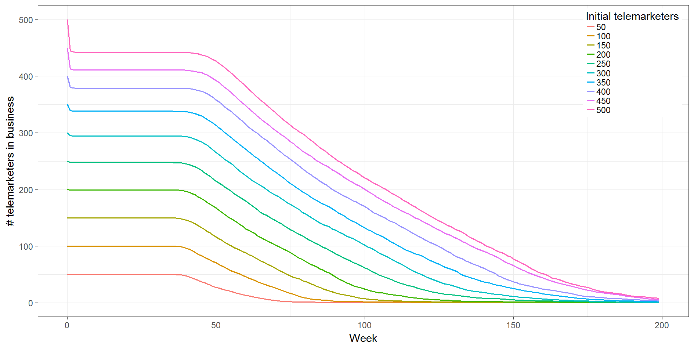
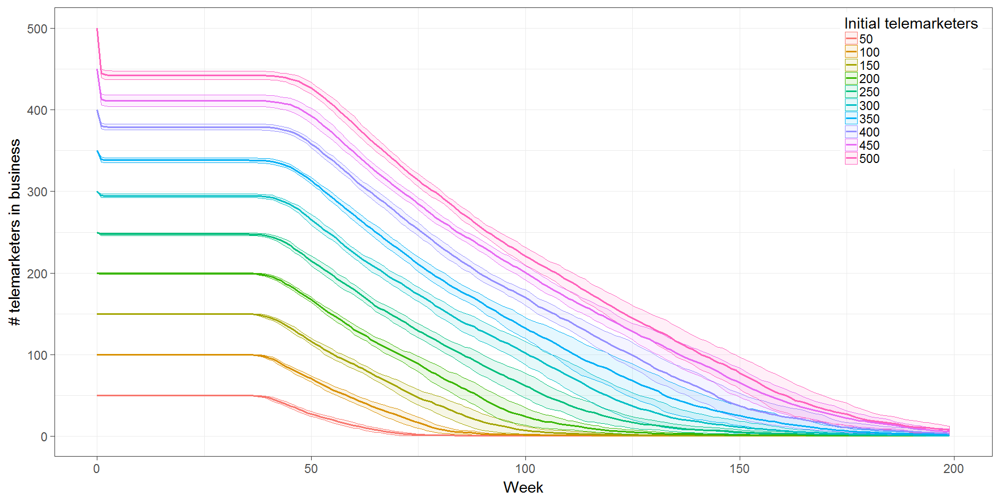
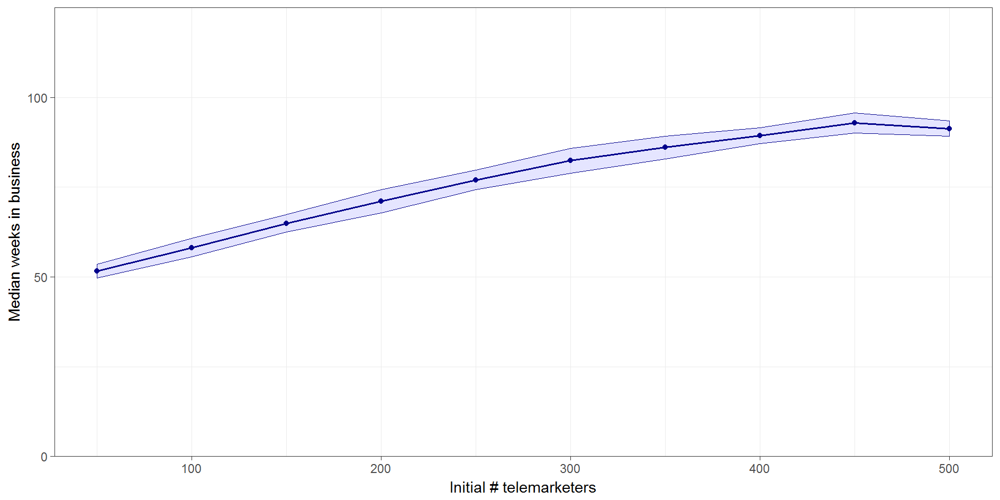
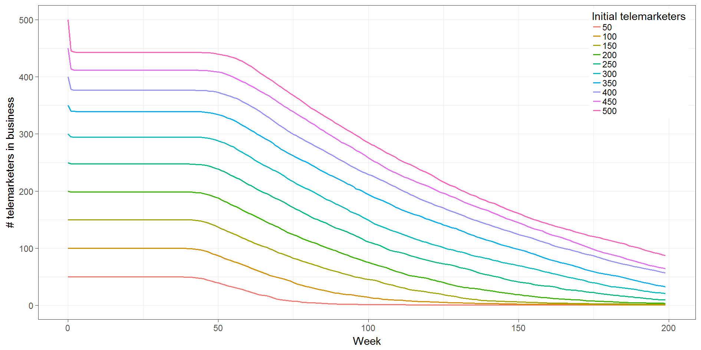
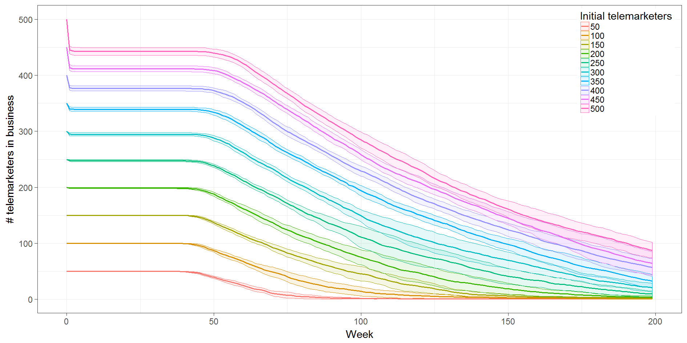
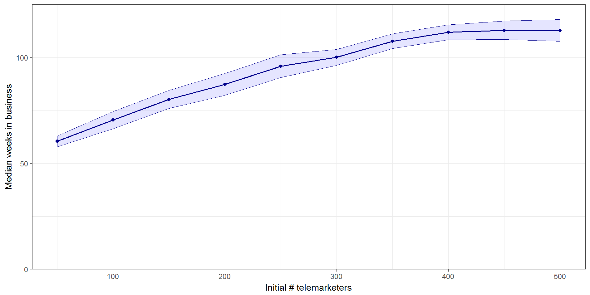

Expected utility function: \[U = (W + PT) \times (1 - F)^T\]
W = wealth, P = profit, F = risk of failure, T = time horizon
How does this change as investors gain more wealth?
Interactive app https://ees4760.jonathangilligan.org/contour





